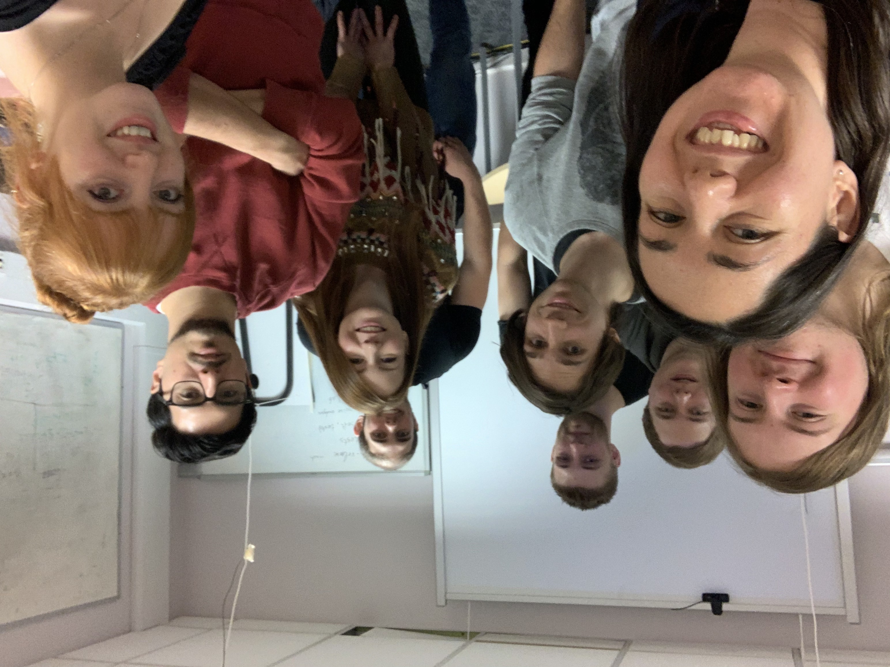

Group members
| PI | Silvia Toonen |
| Marie-Curie Fellow | Tjarda Boelholt |
| Postdoc | Sergio Gomes |
| PhD student | Caspar Bruenech |
| PhD student | Adam Parkosidis |
| Summer student | Amitav Das |
| Summer student | Muhammad Akmal Husain |
Former group members
| Continued as | ||
| Veni-Fellow | Eva La Place | Prof. at KU Leuven |
| Veni-Fellow | Jan van Roestel | PD at ISTA |
| Marie-Curie Fellow | Tomer Shenar | Prof. at Tel Aviv University |
| Newton Fellow | Yan Gao | |
| Rubicon fellow | Valeriya Korol | staff at SRON |
| PhD student | Floris Kummer | |
| PhD student | Andris Doroszmai | PD at NAOJ |
| MSc student | Philip Garcia Hoogland | |
| MSc student | Jorge Romera | |
| MSc student | Guido Hanegraaf | |
| MSc student | Tibi Keizer | |
| MSc student | Antonis Katechakis | |
| MSc student | Michael Stroet | PhD at Armagh |
| MSc student | Gabriel Simion | |
| MSc student | Adam Parkosidis | PhD in my group |
| MSc student | Maitrey Patel | |
| MSc student | Tom Konijn | PhD in Delft |
| MSc student | Sancho Luijten | PhD at Weizmann Institute of Science |
| MSc student | Cameron Barrett | |
| MSc student | Samuel Higginbotham | |
| MSc student | Abbie Nichols | |
| MSc student | Jake Winter | |
| MSc student | Karel Temmink | PhD at Radboud University |
| BSc student | Gideon Kokosky Deforchaux | |
| BSc student | Chris Keijzer | |
| BSc student | Luc Krebbers | |
| BSc student | Rick Limmen | |
| Summer student | Sebastian Gonzalez-Zamora | |
| Summer student | Magdalena Vilaxa Campos | PhD at Radboud University |
| Summer student | Diganta Bandopadhyay | PhD at University of Birmingham |
| Summer student | Brandon Curd | PhD at Harvard |
Job opportunities
Are you interested in stellar interactions and transients? Come and join us in Amsterdam! Our department is rapidly growing, and we're seeking strong and motivated candidates to join our team. If you are interested in joining or interacting with my group and the department, I encourage you to send me a mail at toonen [at] uva.nl. A few job opportunities are listed below. I'm happy to support and help with the application.
- PhD positions at the Anton Pannekoek Institute
- GRAPPA postdoctoral fellowship for an independent research position for three years in the areas of astroparticle physics, cosmology and gravitation.
- Veni fellowship competitive Dutch national fellowship for early career PDs.
- Vidi fellowship competitive Dutch national fellowship towards leadership position.
- Marie Sklodowska-Curie actions , European fellowship towards leadership position.
Tips for writing proposals
- Great seminar given by my former colleague Sera Markoff on "How to apply for stuff".
- Tips for the early career stage in general by Bryan Gaensler and Sarah Maddison.

Group meeting with Alejandro Vigna Gomez & Karel Temmink visiting

Contact details:
Email:
toonen [at] uva.nl
Address:
Silvia Toonen
Anton Pannekoek Institute
University of Amsterdam
Science Park 904
1098 XH Amsterdam
The Netherlands